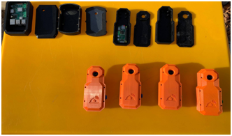
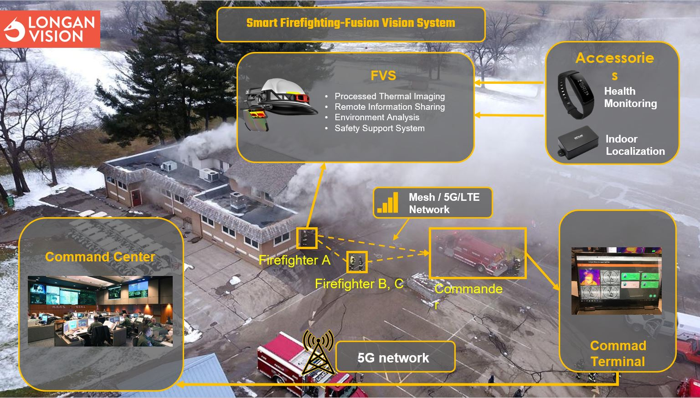
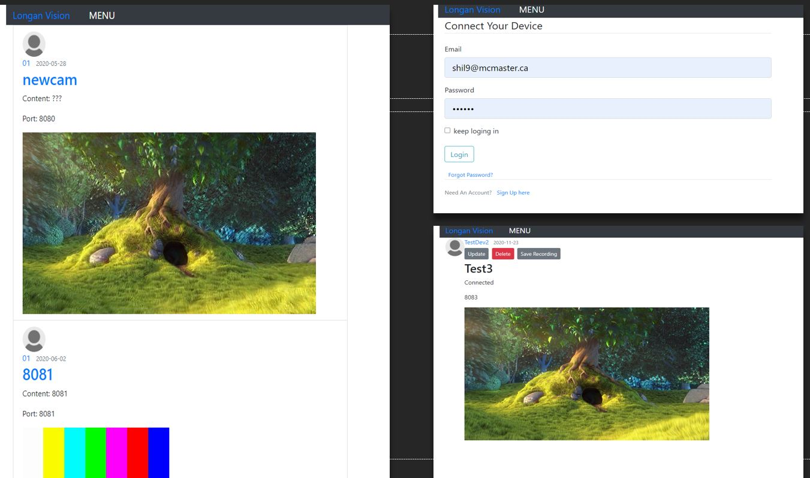

Fusion Vision System - Personalized Web Application
This was a project that started back in September 2019 when I was in my senior year of college. This project started off as a final year Capstone idea and was sponsored by AR company Longan Vision.
Longan Vision started this back in 2018, as a way to provide a smart ecosystem for the First Responder to help them protect life, save more lives, and increase efficiency.
This would enable several bodycam devices to simultaneously livestream and record footage to one central location. These devices stream the video with low latency to a personalized web application.
Only authorized personnel with correct login credentials will be able to view the environment and field-of-view the first responders are real-time experiencing.
There is also a robust networking scheme utilizing mesh network methodology and 5G integration eliminating reliance or dependency on any one device or network.
I worked on this system for a year and a half with 5 engineering colleagues before handing off intellectual rights to Longan Vision.
Technologies:
- - Python, Flask
- - HTML, CSS
- - JavaScript
- - Raspberry Pi Zero W
- - AWS Elastic Beanstalk (S3 & RDS)
- - UV4L Library - port forwarding
- - AutoCAD - Inventor
- - 5G Network
Web Application Dashboard
Bodycamera Device - All Iterations

Smart Ecosystem Overview

Behavior Flow

Sample Login Form
